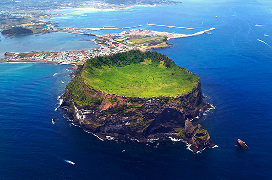

- 1일차
- 2일차
- 3일차
- 4일차
2일차
고운 백사장과 얕은 바다 속 패사층이 만들어내는 푸른빛 바다가 아름다운 해수욕장이다. 제주시에서 14㎞ 동쪽에 위치해 있고 시내버스도 자주 운행되어 관광객뿐 아니라 제주도민도 즐겨 찾는다. 경사도가 5° 정도로 아무리 걸어 들어가도 어른 허리에도 미치지 않을 만큼 수심이 얕아 가족 단위 피서객이 즐기기에 적당하고 검은 현무암과 아치형 다리, 바다로 이어지는 산책 데크까지 갖추어져 있어 제주의 푸른 바다를 관망하기에도 그만이다.
특히 커다란 현무암 바위를 중심으로 백사장이 하트 모양을 이루고 있어 바람을 막아주니 늘 바다가 잔잔하여 국내에서는 유일하게 카약을 즐길 수 있다. 인근 함덕리에는 국내 최대라 일컬어지는 수박 재배 단지가 있고 주차장과 민박 단지, 샤워 시설 및 야영장이 잘 갖추어져 있어 국민관광단지로 지정되어 있다.
064-787-4551
제주 서귀포시 표선면 표선당포로 4지번표선리 44-11
매일 08:00~17:00 둘째,넷째 목요일 휴무
보말죽 12,000보말칼국수 10,000
064-787-4551
제주 서귀포시 표선면 표선당포로 4지번표선리 44-11
매일 08:00~17:00 둘째,넷째 목요일 휴무
보말죽 12,000보말칼국수 10,000

푸른 바다 사이에 우뚝 솟은 성채와 같은 모양, 봉우리 정상에 있는 거대한 사발 모양의 분화구, 그리고 그 위에서 맞이하는 일출의 장관 때문에 성산일출봉은 많은 사람들의 감흥과 탄성을 자아낸다. 성산일출봉과 어우러진 경치는 아름답기 그지없지만, 일출봉의 탄생과 성장의 비밀을 알게 되면 지금까지 몰랐던 지질학적 가치와 자연의 아름다움이 일출봉에 숨어있음을 깨닫게 될 것이다. 어느 선현께서 아는 만큼 보인다고 하지 않았던가?